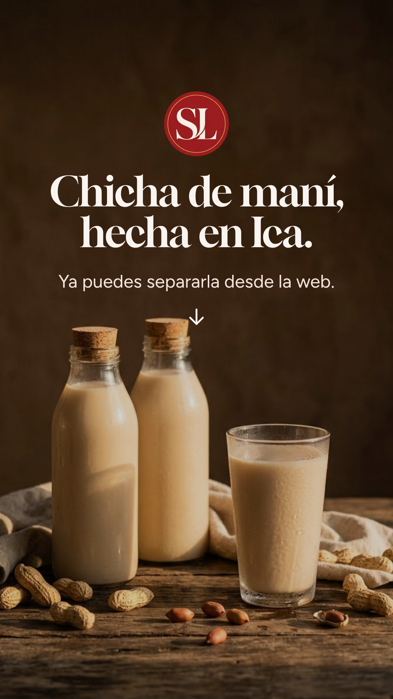
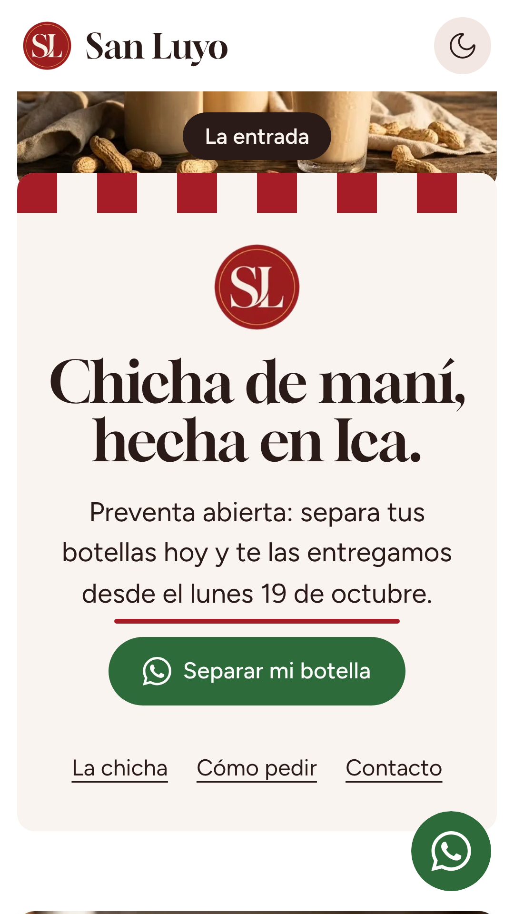
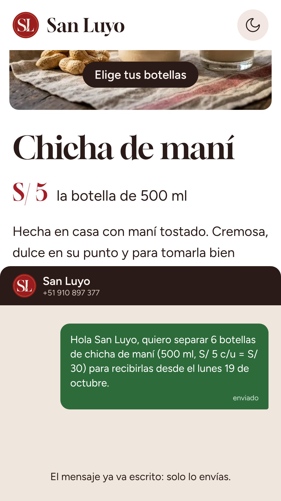
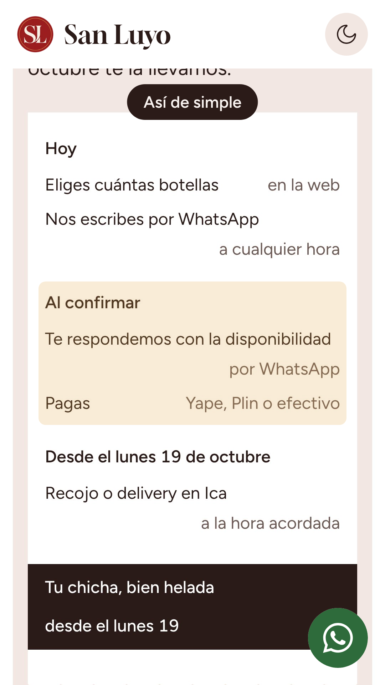
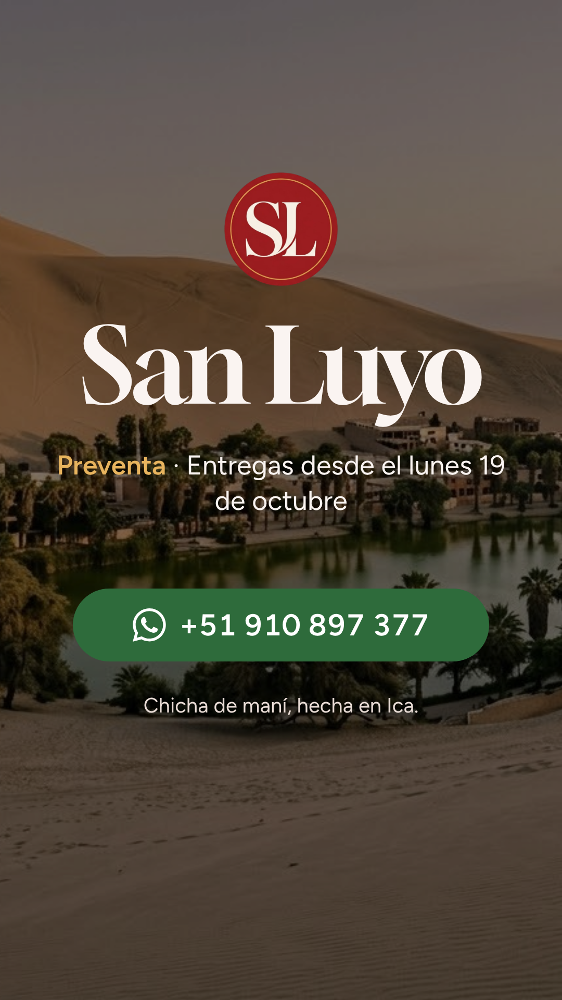

01: Gancho
0.0 a 3.0 s
Logo SL y "Chicha de maní, hecha en Ica." sobre la foto de las botellas; debajo "Ya puedes separarla desde la web."

02: La entrada
3.0 a 9.0 s
La portada de la web; se subraya la frase de la preventa y late el botón "Separar mi botella".

03: El producto
9.0 a 17.0 s
Chicha de maní a S/ 5; se toca "6", el total pasa a S/ 30 y, al tocar "Separar 6 botellas", sube el chat con el mensaje ya escrito.

04: Cómo pedir
17.0 a 24.0 s
La nota impresa de la web; cada paso se resalta al pasar y termina en "Tu chicha, bien helada · desde el lunes 19".

05: Cierre
24.0 a 30.0 s
Primero el contacto de la web; luego Huacachina con el logo, "San Luyo", la preventa y el número de WhatsApp.